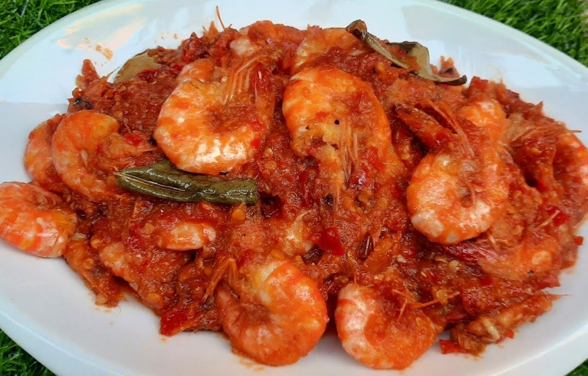
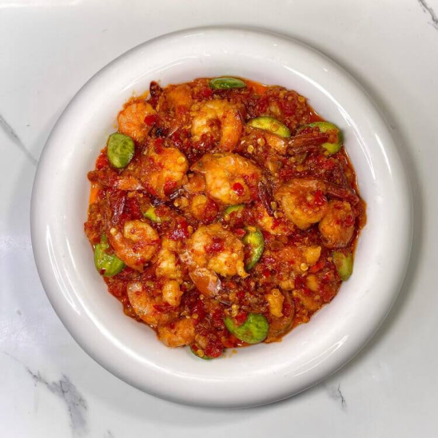
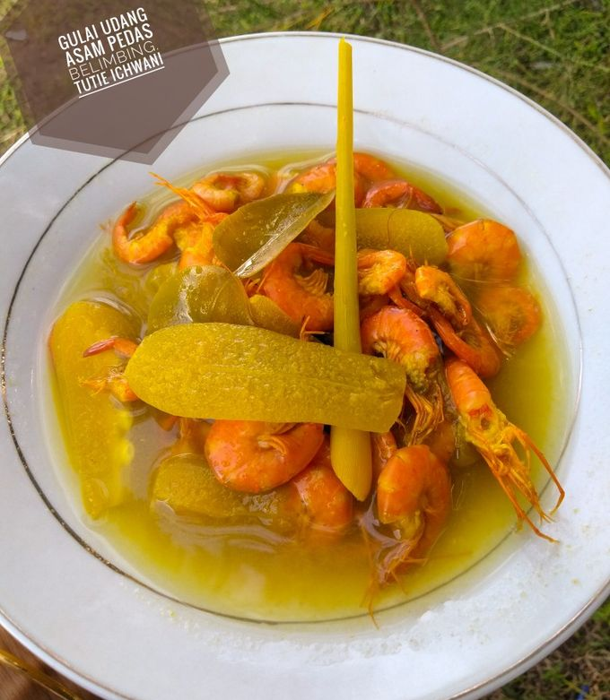
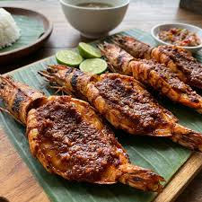
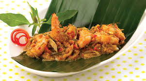

Shrimp Menu

Udang Balado
A cornerstone of Padang cuisine.

Udang Goreng Mentega
A Chinese-Indonesian fusion favorite, these are wok-fried, shell-on prawns glazed in a savory.

Sambal Petai Udang
eloved across the region, this dish pairs juicy, tender prawns with crunchy stink beans (petai).

Gulai Udang Asam Suluh
An Acehnese specialty, this creamy shrimp curry is cooked in a vibrant coconut milk broth infused with turmeric, lemongrass, and the tart freshness of asam sunti (dried bilimbi fruit). Buy

Udang Bakar Jimbaran
A staple on the beaches of Bali, these large prawns are brushed with a complex Balinese spice paste (bumbu) containing turmeric, chili, shrimp paste, and sweet soy.

Pepes Udang
A delicate yet deeply fragrant dish where fresh shrimp are mixed with shredded coconut, lemongrass, kaffir lime leaves, and rich spices.